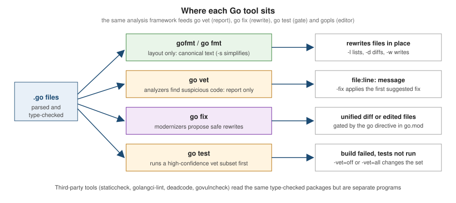

Formatting, vet, fix and Static Analysis
|
This content was generated with the assistance of AI and should be verified against the official documentation before being relied on in production. |
This page is written against Go 1.27 (go1.27.2) and was checked on 2026-10-18. Go ships with three tools that look at
your source without running it: gofmt, which decides how the code is laid out; go vet, which reports code that
compiles but is probably wrong; and go fix, which rewrites old-style code into the idioms of newer releases. All
three are part of the standard distribution, need no configuration and are meant to be run on every project. Every
example below was formatted, compiled and run (or vetted) with Go 1.27.2, and the output shown is the real output
(tools that were not installed are labelled as not run). The third-party tools (goimports, staticcheck,
golangci-lint, deadcode and govulncheck) were not installed when this page was written, so they are described from
their documentation and are labelled not run.
The tools build on the same type-checked packages that go build uses. How the compiler pipeline and the build cache
fit around them is shown in The go Command, Builds and Cross-Compilation;
the tests that go vet also checks are covered in Testing; doc comments, which gofmt
also reformats, in Documentation and Doc Comments. Readers coming from other
languages will find the closest equivalents in Rust: Tooling: Clippy, rustfmt & rust-analyzer
and C: Build and Tooling. The main difference is that Go keeps a
single, non-negotiable format and puts most of the "lint" work in a standard go vet, instead of in a separately
configured linter.

The tools at a glance
| Tool | What it does | Changes files? | Ships with Go? |
|---|---|---|---|
|
prints or rewrites source in the one canonical layout |
yes ( |
yes |
|
runs analyzers that report suspicious constructs; exit status 1 when anything is reported |
no, except |
yes |
|
runs modernizer analyzers and applies their fixes ( |
yes, unless |
yes (rewritten in Go 1.26) |
|
runs a high-confidence subset of vet before running the tests |
no |
yes |
gopls |
language server: diagnostics, quick fixes and refactorings in the editor, from the same analyzers |
in the editor |
no ( |
goimports |
gofmt plus adding, removing and grouping imports |
yes |
no ( |
staticcheck, golangci-lint |
community linters with hundreds of extra checks |
no |
no |
deadcode, govulncheck |
unreachable functions; known vulnerabilities in the code you actually call |
no |
no ( |
gofmt: one canonical format
Go settled formatting by removing the choice. gofmt parses a file into a syntax tree and prints it back in a single
layout, so there is nothing to configure and no style debates: tabs for indentation, spaces for alignment, one canonical
position for braces and a fixed spacing convention. The Effective Go section on formatting explains the rationale, and the
Go blog post "go fmt your code" describes the benefits (diffs contain only real changes and mechanical refactoring tools can
rewrite code safely). Almost every Go editor and the standard go command assume gofmt-formatted source.
Take a deliberately untidy file from the shelf catalogue:
package fmtdemo
import (
"fmt"
"strings"
)
type Book struct {
Title string
Author string
Pages int
}
func Describe(books []Book) string {
var b strings.Builder
for i:=0;i<len(books);i++ {
fmt.Fprintf(&b,"%s by %s\n",books[i].Title,books[i].Author)
}
if len(books) > 0 { b.WriteString("done") }
return b.String()
}
func Tail(s []int) []int {
return s[1:len(s)]
}
func Pairs() []Book {
return []Book{Book{"Dune", "Herbert", 412}, Book{"Emma", "Austen", 474}}
}Source: cmd/gofmt
gofmt -l lists the files whose formatting differs, which is what a CI check wants, and prints nothing for a file that
is already formatted:
$ gofmt -l .
fmtdemo/messy.gogofmt -d prints a unified diff instead of the file, without touching it. Only the first part is shown here:
$ gofmt -d fmtdemo/messy.go
diff fmtdemo/messy.go.orig fmtdemo/messy.go
--- fmtdemo/messy.go.orig
+++ fmtdemo/messy.go
@@ -1,22 +1,24 @@
package fmtdemo
import (
-"fmt"
-"strings"
+ "fmt"
+ "strings"
)
type Book struct {
-Title string
-Author string
-Pages int
+ Title string
+ Author string
+ Pages int
}
func Describe(books []Book) string {
var b strings.Builder
- for i:=0;i<len(books);i++ {
- fmt.Fprintf(&b,"%s by %s\n",books[i].Title,books[i].Author)
- }
- if len(books) > 0 { b.WriteString("done") }
+ for i := 0; i < len(books); i++ {
+ fmt.Fprintf(&b, "%s by %s\n", books[i].Title, books[i].Author)
+ }
+ if len(books) > 0 {
+ b.WriteString("done")
+ }
return b.String()
}Source: cmd/gofmt
The -s flag additionally simplifies code. It rewrites s[1:len(s)] to s[1:] and drops the redundant element type in
composite literals, which is why gofmt -l is clean on a file that gofmt -s -l still lists:
$ gofmt -s -d fmtdemo/messy.go | tail -14
func Tail(s []int) []int {
- return s[1:len(s)]
+ return s[1:]
}
func Pairs() []Book {
- return []Book{Book{"Dune", "Herbert", 412}, Book{"Emma", "Austen", 474}}
+ return []Book{{"Dune", "Herbert", 412}, {"Emma", "Austen", 474}}
}Source: cmd/gofmt: -s
gofmt and go fmt flags
go fmt is only a wrapper: it runs gofmt -l -w on the packages you name (not on files), so it rewrites the files and
prints the names of those it changed. Pass -n to see the command without running it, or -x to see it as it runs:
$ go fmt -n ./...
/Users/albertoirurueta/sdk/go1.27.2/bin/gofmt -l -w fmtdemo/messy.go
$ go fmt ./...
fmtdemo/messy.go| Flag | Meaning |
|---|---|
|
list files whose formatting differs from gofmt’s; prints nothing when everything is formatted |
|
print a unified diff of the changes instead of rewriting files |
|
write the result to the source file instead of standard output (without it |
|
also apply the simplifications described above |
|
apply a rewrite rule to the syntax tree before formatting; single lower-case letters are wildcards for expressions |
|
report all syntax errors, not only the first ten on different lines |
|
write a CPU profile (a tool-developer option) |
no file arguments |
read the program from standard input and write the formatted program to standard output |
The rewrite rule is a small refactoring tool. This one applies the -s simplification to slice expressions only, and
-d shows the result without writing it (the same rule is given in the gofmt documentation):
$ gofmt -r 'a[b:len(a)] -> a[b:]' -d fmtdemo/messy.go
diff fmtdemo/messy.go.orig fmtdemo/messy.go
--- fmtdemo/messy.go.orig
+++ fmtdemo/messy.go
@@ -23,7 +23,7 @@
}
func Tail(s []int) []int {
- return s[1:len(s)]
+ return s[1:]
}
func Pairs() []Book {Source: cmd/gofmt: -r
Reading from standard input makes gofmt usable as a filter, which is how many editors call it:
$ printf 'package p\nfunc F( ) { }\n' | gofmt
package p
func F() {}Source: cmd/gofmt
Why Go code has no semicolons, and the brace rule
gofmt does not decide where braces go because the language already does. The lexer inserts a semicolon after a line’s
final token when that token is an identifier, a literal, one of the keywords break, continue, fallthrough or
return, or one of the operators ++ and --, or one of ), ] and }. A function whose opening brace is on its own line therefore ends the
signature with an inserted semicolon, and the parser rejects it before gofmt can do anything. Both gofmt and the compiler
report the same position:
package brace
func F(n int) int
{
return n
}$ gofmt -l brace
brace/brace.go:4:1: unexpected semicolon or newline before {
$ go build ./brace
# example.com/shelf/brace
brace/brace.go:4:1: syntax error: unexpected semicolon or newline before {What else gofmt does
-
Build constraints. Since Go 1.17
gofmtkeeps//go:buildand the legacy// +buildlines in sync: on a file that has only the old form it adds the new one. Given a file that starts with// +build linux darwinand is otherwise empty,gofmt -dprints:diff legacy/old_tag.go.orig legacy/old_tag.go --- legacy/old_tag.go.orig +++ legacy/old_tag.go @@ -1,3 +1,4 @@ +//go:build linux || darwin // +build linux darwin package legacyThe
go fixmodernizerplusbuild, shown later, then removes the obsolete line. -
Doc comments. Since Go 1.19
gofmtreformats doc comments: it normalises list markers and indentation, turns headings into the#form and moves code blocks to tab-indented blocks. Write them as described in Documentation and Doc Comments. -
Imports. It sorts the imports inside each block alphabetically but never adds or removes any; that is goimports.
-
Generated files. Files carrying the
Code generated ... DO NOT EDIT.header are formatted like any other, but you should not edit them by hand. See Directives, Code Generation and Embedding.
Source: Go 1.17 release notes, Go 1.19 release notes and Go Doc Comments
Go 1.27: a small change to column alignment
Go 1.27 fixed the logic that gofmt and go/format use to decide column alignment. The old logic made the result vary
slightly between CPU architectures; the new logic changes the alignment of a small number of files, so running the Go 1.27
gofmt over code that an earlier release had formatted may produce minor whitespace diffs. Reformat once, in a commit of
its own, when you adopt Go 1.27, and pin the same toolchain in CI and in editors so that gofmt -l agrees everywhere
(see Toolchain Versions and Compatibility).
Source: Go 1.27 release notes: Gofmt
Checking and enforcing the format
gofmt -l exits with status 0 even when it lists files, so CI scripts test its output rather than its exit code. A
check that fails the build when anything is unformatted:
test -z "$(gofmt -s -l .)" || { echo "unformatted files:"; gofmt -s -l .; exit 1; }Source: cmd/gofmt
Most teams instead format on save in the editor (gopls does this with gofmt or goimports) and add the check above, or
golangci-lint's formatter support (below), as a safety net. The conventional wisdom is that a pull request should never
contain formatting-only noise.
goimports
goimports is a superset of gofmt from the golang.org/x/tools module. In addition to formatting it adds missing
import lines (it finds the package by name in the standard library and the module), removes unused ones, which would
otherwise be a compile error, and groups imports in the conventional blocks. Because the compiler rejects an unused
import, editors that run goimports on save make the error disappear before you see it. The -local prefix flag keeps
packages of your own module in a separate block after the third-party ones. gopls performs the same job through its
"organize imports" code action, so most developers never run the binary by hand. Not run (not installed):
go install golang.org/x/tools/cmd/goimports@v0.52.0
goimports -l -w -local example.com/shelf .Source: golang.org/x/tools/cmd/goimports
Since Go 1.24 a module can record developer tools in its own go.mod with a tool directive, so the version is pinned
for the whole team and go tool runs it (see Modules and Dependency Management):
$ go get -tool golang.org/x/tools/cmd/goimports@v0.52.0
$ go tool goimports -l -local example.com/shelf .Source: Managing dependencies: Tools
Both commands above are not run: this page was written with the module proxy switched off.
go vet: finding suspicious code
go vet examines Go source and reports constructs that compile but are almost certainly mistakes, such as a
Printf format that does not match its arguments. The checks are heuristics: they are tuned so that reports are
usually real bugs, but they do not promise zero false positives, and they do not find every bug. Vet never changes
a program’s behaviour; it only prints file:line:column: message lines and exits with status 1 when it printed any, which
makes it a natural CI step. It runs on whole packages after type checking, so unlike gofmt it needs code that compiles.
go vet # the package in the current directory
go vet ./... # every package in the module
go vet example.com/shelf/catalogSource: cmd/vet
The analyzers
go tool vet help lists the registered analyzers. This is the real list for Go 1.27.2:
$ go tool vet help
...
Registered analyzers:
appends check for missing values after append
asmdecl report mismatches between assembly files and Go declarations
assign check for useless assignments
atomic check for common mistakes using the sync/atomic package
bools check for common mistakes involving boolean operators
buildtag check //go:build and // +build directives
cgocall detect some violations of the cgo pointer passing rules
composites check for unkeyed composite literals
copylocks check for locks erroneously passed by value
defers report common mistakes in defer statements
directive check Go toolchain directives such as //go:debug
errorsas report passing non-pointer or non-error values to errors.As
framepointer report assembly that clobbers the frame pointer before saving it
hostport check format of addresses passed to net.Dial
httpresponse check for mistakes using HTTP responses
ifaceassert detect impossible interface-to-interface type assertions
loopclosure check references to loop variables from within nested functions
lostcancel check cancel func returned by context.WithCancel is called
nilfunc check for useless comparisons between functions and nil
printf check consistency of Printf format strings and arguments
shift check for shifts that equal or exceed the width of the integer
sigchanyzer check for unbuffered channel of os.Signal
slog check for invalid structured logging calls
stdmethods check signature of methods of well-known interfaces
stdversion report uses of too-new standard library symbols
stringintconv check for string(int) conversions
structtag check that struct field tags conform to reflect.StructTag.Get
testinggoroutine report calls to (*testing.T).Fatal from goroutines started by a test
tests check for common mistaken usages of tests and examples
timeformat check for calls of (time.Time).Format or time.Parse with 2006-02-01
unmarshal report passing non-pointer or non-interface values to unmarshal
unreachable check for unreachable code
unsafeptr check for invalid conversions of uintptr to unsafe.Pointer
unusedresult check for unused results of calls to some functions
waitgroup check for misuses of sync.WaitGroup
...Source: cmd/vet
go tool vet help NAME prints the documentation and the flags of one analyzer, for example go tool vet help printf or
go tool vet help hostport. (Go 1.12 removed go tool vet as a way to run vet and told people to use go vet; in Go 1.27
go tool vet is back as the way to reach the vet binary itself, for help and for the -vettool flag below.)
Selecting analyzers, output and fixes
By default all analyzers run. Naming an analyzer as a flag runs only that one; negating one disables only that one:
$ go vet -printf=false ./vet/printf ./vet/stringint
vet/stringint/stringint.go:4:9: conversion from int to string yields a string of one rune, not a string of digits
$ go vet -stringintconv ./vet/printf ./vet/stringint
vet/stringint/stringint.go:4:9: conversion from int to string yields a string of one rune, not a string of digitsSource: cmd/vet
| Flag | Meaning |
|---|---|
|
run only the named analyzers / run everything except the named ones |
|
analyzer-specific flags, for example |
|
print the offending line plus |
|
emit the diagnostics, including their suggested fixes, as JSON |
|
instead of printing each diagnostic, apply its first suggested fix (present in Go 1.27.2) |
|
with |
|
run a different tool built on |
build flags |
|
printf
The printf analyzer is the one that finds most real bugs. It checks every call of fmt.Printf and friends, of
log.Printf, of (*testing.T).Errorf and of any function that vet detects is a wrapper around them:
package printf
import (
"fmt"
"log"
)
type ISBN string
func Report(title string, copies int, isbn ISBN) {
fmt.Printf("%s has %d copies\n", title)
fmt.Printf("%d copies of %s\n", title, copies)
log.Printf("lending %q", isbn, copies)
fmt.Println("done: %s", title)
fmt.Printf(title)
}$ go vet ./vet/printf
vet/printf/printf.go:11:21: fmt.Printf format %d reads arg #2, but call has 1 arg
vet/printf/printf.go:12:14: fmt.Printf format %d has arg title of wrong type string
vet/printf/printf.go:13:2: log.Printf call needs 1 arg but has 2 args
vet/printf/printf.go:14:2: fmt.Println call has possible Printf formatting directive %s
vet/printf/printf.go:15:13: non-constant format string in call to fmt.PrintfSource: cmd/vet: printf and fmt
The last report was added in Go 1.24: a call of the form fmt.Printf(s) with a non-constant format and no other arguments
is nearly always a bug, because s may contain a %. Since existing code often trips over it, the check applies only to
modules whose go line is 1.24 or later. The fix is fmt.Print(s) or fmt.Printf("%s", s). In Go 1.27 the analyzer
also reports fmt.Errorf("...: %w", p) when p has type *E and the type E itself implements error. Wrapping the
pointer makes errors.Is and errors.As miss the value:
package wrapptr
import (
"errors"
"fmt"
)
type NotFound struct{ ISBN string }
func (NotFound) Error() string { return "not found" }
func Find() error {
p := &NotFound{ISBN: "x"}
return fmt.Errorf("lookup: %w", p)
}
func Is(err error) bool {
var nf NotFound
return errors.As(err, &nf)
}$ go vet ./vet/wrapptr
vet/wrapptr/wrapptr.go:14:29: %w wants operand of error type NotFound, not pointer type *NotFound (defeats errors.Is)Source: Go 1.27 release notes: Vet and Go 1.24 release notes: Vet
How the verbs themselves work is covered in fmt, Strings and Text Processing.
copylocks
A sync.Mutex must not be copied after first use. The copylocks analyzer finds every place a value containing a lock
is copied: by-value receivers and parameters, assignments, returns, range variables and composite literals:
package copylocks
import "sync"
type Store struct {
mu sync.Mutex
books map[string]int
}
func (s Store) Count() int {
s.mu.Lock()
defer s.mu.Unlock()
return len(s.books)
}
func Clone(s *Store) Store {
c := *s
return c
}
func Each(stores []Store) {
for _, s := range stores {
_ = s.books
}
}$ go vet ./vet/copylocks
vet/copylocks/copylocks.go:10:9: Count passes lock by value: example.com/shelf/vet/copylocks.Store contains sync.Mutex
vet/copylocks/copylocks.go:17:7: assignment copies lock value to c: example.com/shelf/vet/copylocks.Store contains sync.Mutex
vet/copylocks/copylocks.go:18:9: return copies lock value: example.com/shelf/vet/copylocks.Store contains sync.Mutex
vet/copylocks/copylocks.go:22:9: range var s copies lock: example.com/shelf/vet/copylocks.Store contains sync.MutexSource: sync: Mutex and cmd/vet: copylocks
The fix is a pointer receiver and pointer elements ([]*Store), as explained in
Methods and Receivers and
Sync and Atomics. Go 1.22 made a three-clause for loop copy its loop variable
on every iteration, so Go 1.24 taught the analyzer to report a sync.Locker declared in such a loop header. Types that
should never be copied but contain no lock can embed a zero-size noCopy type with Lock and Unlock methods to get the
same protection.
loopclosure and the go line
Before Go 1.22 all iterations of a for loop shared one variable, so a closure started with go or defer often saw
the last value. The loopclosure analyzer reported that. Go 1.22 gave each iteration its own variable, so for modules whose
go line is 1.22 or later the analyzer is silent, and it reports only for older language versions. The same code in a
module with go 1.21 in its go.mod:
module example.com/oldmod
go 1.21package oldmod
import (
"fmt"
"slices"
"sync"
)
func Sorted(ids []string) []string {
return slices.Sorted(slices.Values(ids))
}
func Show(items []string) {
var wg sync.WaitGroup
for _, it := range items {
wg.Add(1)
go func() {
defer wg.Done()
fmt.Println(it)
}()
}
wg.Wait()
}
func Min3(a, b, c int) int {
return min(a, b, c)
}$ go vet ./...
old.go:10:16: slices.Sorted requires go1.23 or later (module is go1.21)
old.go:10:30: slices.Values requires go1.23 or later (module is go1.21)
old.go:19:16: loop variable it captured by func literal
$ go build ./...
$The example also shows the next analyzer. The per-iteration semantics, the go line and the pre-1.22 v := v idiom are
explained in Control Flow; go fix removes the now-redundant copies (below).
stdversion
The compiler checks that your code uses only language features allowed by the go line, but a newer toolchain happily lets
you call library functions added after that version. stdversion reports references to standard-library symbols that
are newer than the Go version in force in the file, which is set by the go directive in go.mod or by a //go:build go1.N
constraint. In the output above go build succeeded while vet reported slices.Sorted requires go1.23 or later (module is go1.21).
A library that supports Go 1.21 users but is built with Go 1.27 needs this check. The analyzer does not report a too-new field
or method of a type that is itself too new, to avoid false positives through aliases.
Go 1.27 added stdversion to the subset that go test runs (below), so such mistakes now fail go test too:
$ go test ./...
# example.com/oldmod
# [example.com/oldmod]
./old.go:10:16: slices.Sorted requires go1.23 or later (module is go1.21)
./old.go:10:30: slices.Values requires go1.23 or later (module is go1.21)
FAIL example.com/oldmod [build failed]
FAIL
$ go test -vet=off ./...
ok example.com/oldmod 0.187sSource: Go 1.27 release notes: go test and cmd/vet: stdversion
lostcancel
context.WithCancel, WithTimeout and WithDeadline return a cancel function that must be called to release
the context’s resources. lostcancel finds paths on which it is not:
package lostcancel
import (
"context"
"time"
)
func Fetch(parent context.Context, dry bool) context.Context {
ctx, cancel := context.WithTimeout(parent, time.Second)
if dry {
return ctx
}
defer cancel()
return ctx
}$ go vet ./vet/lostcancel
vet/lostcancel/lostcancel.go:9:2: the cancel function is not used on all paths (possible context leak)
vet/lostcancel/lostcancel.go:11:3: this return statement may be reached without using the cancel var defined on line 9Source: context: WithCancel and cmd/vet: lostcancel
If the cancel variable is never used at all, the compiler rejects the program first (declared and not used: cancel),
and go vet then stops with vet: ...: declared and not used: cancel because it cannot type-check the package. Contexts and
cancellation are covered in Context.
tests
The tests analyzer (new in Go 1.24, and part of the go test subset) checks Test, Benchmark, Fuzz and Example
functions. It reports examples that refer to identifiers or methods that do not exist, and test names whose first letter after
Test is lower-case. Such a function is silently not run by go test, which is the most dangerous case:
package tests
import "testing"
type Store struct{}
func (Store) Get() {}
func ExampleStore_Put() {}
func ExampleMissing() {}
func Example_lower() {}
func Testlending(t *testing.T) { t.Log("never runs") }$ go vet ./vet/tests_a
vet/tests_a/a_test.go:9:1: ExampleStore_Put refers to unknown field or method: Store.Put
vet/tests_a/a_test.go:11:1: ExampleMissing refers to unknown identifier: Missing
vet/tests_a/a_test.go:15:6: Testlending has malformed name: first letter after 'Test' must not be lowercaseSource: Go 1.24 release notes: Vet and testing: Examples
Functions with a wrong signature, such as func BenchmarkLoad(b *testing.T) or func FuzzParse(f *testing.T), are rejected
by the go command itself while it builds the test binary (wrong signature for BenchmarkLoad, must be: func BenchmarkLoad(b *testing.B)),
even with -vet=off. See Testing and
Benchmarks, Fuzzing and synctest. The related testinggoroutine
analyzer reports t.Fatal and similar calls from a goroutine the test started, because they would call runtime.Goexit on the wrong
goroutine:
$ go vet ./vet/testgo
vet/testgo/testgo_test.go:9:3: call to (*testing.T).Fatal from a non-test goroutinewaitgroup
A sync.WaitGroup counter must be incremented before the goroutine that will decrement it is started; calling Add from
inside the new goroutine races with Wait. Go 1.25 added the waitgroup analyzer for exactly this:
package waitgroup
import "sync"
func Run(n int) {
var wg sync.WaitGroup
for range n {
go func() {
wg.Add(1)
defer wg.Done()
}()
}
wg.Wait()
}$ go vet ./vet/waitgroup
vet/waitgroup/waitgroup.go:9:10: WaitGroup.Add called from inside new goroutineSource: Go 1.25 release notes: Vet and sync: WaitGroup
The correct structure, or wg.Go (Go 1.25), which starts the goroutine and pairs the Add and Done for you, is shown in
Sync and Atomics and Concurrency Patterns.
Do not confuse this vet analyzer with the go fix modernizer waitgroupgo, which rewrites the Add(1) / go / Done pattern
into wg.Go: Go 1.27 renamed the fixer from waitgroup to waitgroupgo to remove the ambiguity, and the vet analyzer
kept its name.
hostport
Building an address with fmt.Sprintf("%s:%d", host, port) breaks for IPv6 literals, which need brackets. Go 1.25 added
hostport for addresses passed to net.Dial:
package hostport
import (
"fmt"
"net"
)
func Dial(host string, port int) (net.Conn, error) {
addr := fmt.Sprintf("%s:%d", host, port)
return net.Dial("tcp", addr)
}$ go vet ./vet/hostport
vet/hostport/hostport.go:9:22: address format "%s:%d" does not work with IPv6 (passed to net.Dial at L10)Source: Go 1.25 release notes: Vet and net: JoinHostPort
Other analyzers in practice
Most analyzers report one kind of mistake each. The messages below are real output from small programs, one per analyzer:
| Analyzer | Code that triggers it | Real report |
|---|---|---|
|
|
|
|
|
|
|
|
|
|
|
|
|
|
|
|
|
|
|
|
|
|
using |
|
|
|
|
|
|
|
|
|
|
|
|
|
|
|
|
|
|
|
|
|
|
|
a tag with a space after the colon, |
|
|
|
|
|
|
|
|
statements after a |
|
|
|
|
|
|
|
Source: cmd/vet
The stringintconv report matters to anyone coming from C or Python: string(65) is the one-rune string "A", not "65";
use strconv.Itoa or fmt.Sprint for the digits (see Strings, Runes and UTF-8).
The slog analyzer protects the key/value pairs of Structured Logging with slog,
unsafeptr and the cgo-related cgocall back up the rules in unsafe and Low-Level Programming and
cgo and C Interoperability, and structtag and unmarshal guard
encoding/json. The remaining analyzers (asmdecl, framepointer, buildtag, directive)
check assembly files and build or //go:debug directives; buildtag, for example, rejects a constraint such as //go:build go1.23.1
because a point release cannot be a build constraint (Go 1.24).
A clean program
A program that avoids every pattern above uses the current APIs. It is vet-clean, gofmt-clean and deterministic:
package main
import (
"errors"
"fmt"
"log/slog"
"net"
"os"
"strings"
"sync"
"time"
)
type ISBN string
type NotFound struct{ ISBN ISBN }
func (e *NotFound) Error() string { return "not found: " + string(e.ISBN) }
func find(isbn ISBN) error {
return fmt.Errorf("lookup: %w", &NotFound{ISBN: isbn})
}
func main() {
// printf: verbs and arguments agree; a variable format string uses Print.
title, copies := "Dune", 2
fmt.Printf("%s has %d copies\n", title, copies)
fmt.Print(title, "\n")
// hostport: JoinHostPort handles IPv6 literals.
fmt.Println(net.JoinHostPort("::1", "8080"))
// timeformat: the reference time is 2006-01-02.
due := time.Date(2026, time.October, 18, 0, 0, 0, 0, time.UTC)
fmt.Println(due.Format("2006-01-02"))
// errorsas: AsType (Go 1.26) takes the target type as a type argument.
if nf, ok := errors.AsType[*NotFound](find("978-0-441-17271-9")); ok {
fmt.Println("missing:", nf.ISBN)
}
// waitgroup: WaitGroup.Go (Go 1.25) pairs Add and Done for you.
var (
wg sync.WaitGroup
mu sync.Mutex
seen []string
)
for _, id := range []string{"a", "b", "c"} {
wg.Go(func() {
mu.Lock()
defer mu.Unlock()
seen = append(seen, strings.ToUpper(id))
})
}
wg.Wait()
fmt.Println(len(seen), "goroutines finished")
// slog: key/value pairs come in pairs.
logger := slog.New(slog.NewTextHandler(os.Stdout, &slog.HandlerOptions{
ReplaceAttr: func(groups []string, a slog.Attr) slog.Attr {
if a.Key == slog.TimeKey && len(groups) == 0 {
return slog.Attr{}
}
return a
},
}))
logger.Info("loan created", "isbn", "978-0-441-17271-9", "days", 14)
}$ go vet ./clean && go run ./clean
Dune has 2 copies
Dune
[::1]:8080
2026-10-18
missing: 978-0-441-17271-9
3 goroutines finished
level=INFO msg="loan created" isbn=978-0-441-17271-9 days=14Source: errors: AsType, sync: WaitGroup.Go and log/slog
The vet subset that go test runs
Running every analyzer on every test run would slow go test and risk false positives that block a green build, so
go test runs only a high-confidence subset on the package and its test files: atomic, bools, buildtag, directive,
errorsas, ifaceassert, nilfunc, printf, stdversion, stringintconv and tests. If any of them reports, go test
prints the reports, does not run the test binary and marks the package as a build failure. This behaviour dates from Go 1.10.
The printf bugs above stop a test run, including those inside the tests themselves:
$ go test ./vet/printf
# example.com/shelf/vet/printf
# [example.com/shelf/vet/printf]
vet/printf/printf.go:11:21: fmt.Printf format %d reads arg #2, but call has 1 arg
vet/printf/printf.go:12:14: fmt.Printf format %d has arg title of wrong type string
vet/printf/printf.go:13:2: log.Printf call needs 1 arg but has 2 args
vet/printf/printf.go:14:2: fmt.Println call has possible Printf formatting directive %s
vet/printf/printf.go:15:13: non-constant format string in call to fmt.Printf
vet/printf/printf_test.go:7:18: (*testing.common).Logf format %d has arg "two" of wrong type string
FAIL example.com/shelf/vet/printf [build failed]
FAIL
$ go test -vet=off ./vet/printf
ok example.com/shelf/vet/printf 0.195sSource: cmd/go: Test packages and Go 1.10 release notes
-vet=off disables the step, -vet=all runs every analyzer, and a comma-separated list such as -vet=atomic,printf
chooses the checks. The full vet in CI (go vet ./...) still covers more than the subset, for example copylocks,
lostcancel, loopclosure and waitgroup, so the two are complementary.
Applying vet fixes: -fix and -diff
Many analyzers attach a suggested fix to a diagnostic. go vet -fix applies the first fix of each diagnostic, and
adding -diff previews the patch without touching the files (the --- ... (old) header is printed with the full path, shortened
here):
$ go vet -fix -diff ./vet/hostport
--- vet/hostport/hostport.go (old)
+++ vet/hostport/hostport.go (new)
@@ -6,6 +6,6 @@
)
func Dial(host string, port int) (net.Conn, error) {
- addr := fmt.Sprintf("%s:%d", host, port)
+ addr := net.JoinHostPort(host, fmt.Sprintf("%d", port))
return net.Dial("tcp", addr)
}
$ go vet -fix -diff ./vet/timefmt
--- vet/timefmt/timefmt.go (old)
+++ vet/timefmt/timefmt.go (new)
@@ -3,5 +3,5 @@
import "time"
func Stamp(t time.Time) string {
- return t.Format("2006-02-01")
+ return t.Format("2006-01-02")
}
$ go vet -fix -diff ./vet/printf
--- vet/printf/printf.go (old)
+++ vet/printf/printf.go (new)
@@ -12,5 +12,5 @@
fmt.Printf("%d copies of %s\n", title, copies)
log.Printf("lending %q", isbn, copies)
fmt.Println("done: %s", title)
- fmt.Printf(title)
+ fmt.Printf("%s", title)
}Only the diagnostics that carry a fix change: the mismatched %d arguments of the first two Printf calls need a human.
When an analyzer offers several alternatives it applies the first and says so. For stringintconv the real message is
vet: stringintconv: ignoring alternative fix "Convert a single rune to a string", and the applied fix is
fmt.Sprint(code) plus the added import. The exit status is 1 while a diff is non-empty and 0 after the fix has been applied.
Source: cmd/vet and Go 1.26 release notes
Extra analyzers with -vettool
go vet -vettool=prog runs a different checker in place of the built-in one, as long as it is built on
golang.org/x/tools/go/analysis/unitchecker, which handles the protocol with the go command. go tool -n vet prints the
path of the standard one, and passing it back proves the plumbing:
$ go tool -n vet
/Users/albertoirurueta/sdk/go1.27.2/pkg/tool/darwin_arm64/vet
$ go vet -vettool=$(go tool -n vet) ./vet/timefmt
vet/timefmt/timefmt.go:6:19: 2006-02-01 should be 2006-01-02The opt-in shadow analyzer, which reports a variable declared in an inner scope with the same name and type as one in an outer
scope when the outer one is mentioned after the inner scope ends (the classic err shadowing bug), is not in the standard
vet. It lives in x/tools and is used this way. Not run (needs the network to build the tool):
go install golang.org/x/tools/go/analysis/passes/shadow/cmd/shadow@v0.52.0
go vet -vettool=$(which shadow) ./...The shadowing rules themselves are explained in Program Structure and Lexical Elements.
The same analyzer is available as an opt-in setting in gopls (below), and in golangci-lint as the govet linter’s shadow option.
You can also write your own analyzer with golang.org/x/tools/go/analysis, wrap it with unitchecker.Main, and run it through -vettool
for team-specific rules.
go fix: modernizers
go fix is older than Go 1.0: it originally migrated programs across language and library changes, and by Go 1.25 its
historical fixers were all obsolete. Go 1.26 replaced it completely: it is now the home of the modernizers, analyzers that spot code written in an older style
and rewrite it to use newer language features and library functions, without changing behaviour. It is built on the same analysis framework as go vet, and the
two share analyzers. The difference is the contract: vet reports possible bugs, while a go fix analyzer suggests
safe improvements whose fixes you can apply in bulk. The old fixers were deleted. The Go blog recommends running it every time
you move to a new toolchain, from a clean version-control state so the commit contains only its edits.
go fix ./... # apply every modernizer under the current directory
go fix -diff ./... # print what it would change, exit 1 if anythingSource: The Go Blog: Using go fix to modernize Go code and cmd/go: Apply fixes suggested by static checkers
The registered analyzers
go tool fix help lists them. This is the real list for Go 1.27.2:
$ go tool fix help
...
Registered analyzers:
any replace interface{} with any
atomictypes replace basic types in sync/atomic calls with atomic types
buildtag check //go:build and // +build directives
embedlit simplify references to embedded fields in composite literals
errorsastype replace errors.As with errors.AsType[T]
forvar remove redundant re-declaration of loop variables
hostport check format of addresses passed to net.Dial
inline apply fixes based on 'go:fix inline' comment directives
mapsloop replace explicit loops over maps with calls to maps package
minmax replace if/else statements with calls to min or max
newexpr simplify code by using go1.26's new(expr)
omitzero suggest replacing omitempty with omitzero for struct fields
plusbuild remove obsolete //+build comments
rangeint replace 3-clause for loops with for-range over integers
reflecttypefor replace reflect.TypeOf(x) with TypeFor[T]()
slicesbackward replace backward loops over slices with slices.Backward
slicescontains replace loops with slices.Contains or slices.ContainsFunc
slicessort replace sort.Slice with slices.Sort for basic types
stditerators use iterators instead of Len/At-style APIs
stringsbuilder replace += with strings.Builder
stringscut replace strings.Index etc. with strings.Cut
stringscutprefix replace HasPrefix/TrimPrefix with CutPrefix
stringsseq replace ranging over Split/Fields with SplitSeq/FieldsSeq
testingcontext replace context.WithCancel with t.Context in tests
unsafefuncs replace unsafe pointer arithmetic with function calls
waitgroupgo replace wg.Add(1)/go/wg.Done() with wg.Go
...Source: cmd/fix
| Analyzer | What it modernizes | Needs at least |
|---|---|---|
|
|
Go 1.18 |
|
an |
Go 1.21 |
|
a loop copying or collecting a map becomes |
Go 1.21 to 1.23 |
|
search loops become |
Go 1.21 |
|
removes the |
Go 1.22 |
|
|
Go 1.22 |
|
a backward index loop becomes |
Go 1.23 |
|
|
Go 1.18 / Go 1.20 |
|
ranging over |
Go 1.24 |
|
repeated |
Go 1.10 |
|
|
Go 1.23 and later |
|
|
Go 1.24 |
|
|
Go 1.25 |
|
suggests |
Go 1.24 |
|
|
Go 1.26 |
|
|
Go 1.26 |
|
|
Go 1.22 |
|
|
Go 1.19 |
|
|
Go 1.27 |
|
|
Go 1.17 |
|
inlines calls to functions marked |
Go 1.26 |
|
validate or remove build tags; the same |
any |
The "needs at least" column is the Go version the replacement feature appeared in; a modernizer does nothing in a module whose go line is
older (see below). Go 1.27 added atomictypes, embedlit, slicesbackward and unsafefuncs, and removed fmtappendf,
which had rewritten []byte(fmt.Sprintf(...)) to fmt.Appendf, "due to stylistic concerns".
A legacy file
The next file is written the way Go code was written years ago. It still compiles and passes vet:
package legacy
import (
"errors"
"fmt"
"sort"
"strings"
"sync"
"sync/atomic"
)
type Book struct {
Title string
Pages int
}
type NotFound struct{ ISBN string }
func (e *NotFound) Error() string { return "not found: " + e.ISBN }
// Describe accepts anything.
func Describe(v interface{}) string {
return fmt.Sprint(v)
}
// ByTitle sorts books by title.
func ByTitle(books []Book) {
sort.Slice(books, func(i, j int) bool { return books[i].Title < books[j].Title })
}
// Pages clamps a page count to at least one page.
func Pages(n int) int {
p := n
if p < 1 {
p = 1
}
return p
}
// Total sums every page count.
func Total(books []Book) int {
total := 0
for i := 0; i < len(books); i++ {
total += books[i].Pages
}
return total
}
// Split splits "key=value".
func Split(pair string) (string, string) {
eq := strings.Index(pair, "=")
if eq < 0 {
return pair, ""
}
return pair[:eq], pair[eq+1:]
}
// Strip removes a prefix.
func Strip(isbn string) string {
if strings.HasPrefix(isbn, "ISBN ") {
return strings.TrimPrefix(isbn, "ISBN ")
}
return isbn
}
// Clone copies a map.
func Clone(src map[string]int) map[string]int {
dst := make(map[string]int)
for k, v := range src {
dst[k] = v
}
return dst
}
// Has reports whether want is present.
func Has(ids []string, want string) bool {
for _, id := range ids {
if id == want {
return true
}
}
return false
}
// Last prints from the end.
func Last(ids []string) {
for i := len(ids) - 1; i >= 0; i-- {
fmt.Println(ids[i])
}
}
// Fan starts one goroutine per id.
func Fan(ids []string) {
var wg sync.WaitGroup
for _, id := range ids {
id := id
wg.Add(1)
go func() {
defer wg.Done()
fmt.Println(id)
}()
}
wg.Wait()
}
// Count increments a counter.
func Count(n *int64) {
atomic.AddInt64(n, 1)
}
// Fields splits a line.
func Fields(line string) {
for _, f := range strings.Fields(line) {
fmt.Println(f)
}
}
// Join concatenates in a loop.
func Join(ids []string) string {
s := ""
for _, id := range ids {
s += id + ","
}
return s
}
// Missing unwraps.
func Missing(err error) bool {
var nf *NotFound
return errors.As(err, &nf)
}
// Days returns a pointer to a copy of 14.
func Days() *int {
d := 14
return &d
}Source: cmd/fix
go fix -diff
go fix -diff prints a unified diff and exits with status 1 if it is not empty, so it also works as a "is this code modern?"
check. Here is the real result for the file above, plus its test file (paths shortened):
$ go fix -diff ./legacy
--- legacy/legacy.go (old)
+++ legacy/legacy.go (new)
@@ -3,6 +3,8 @@
import (
"errors"
"fmt"
+ "maps"
+ "slices"
"sort"
"strings"
"sync"
@@ -19,7 +21,7 @@
func (e *NotFound) Error() string { return "not found: " + e.ISBN }
// Describe accepts anything.
-func Describe(v interface{}) string {
+func Describe(v any) string {
return fmt.Sprint(v)
}
@@ -30,17 +32,14 @@
// Pages clamps a page count to at least one page.
func Pages(n int) int {
- p := n
- if p < 1 {
- p = 1
- }
+ p := max(n, 1)
return p
}
// Total sums every page count.
func Total(books []Book) int {
total := 0
- for i := 0; i < len(books); i++ {
+ for i := range books {
total += books[i].Pages
}
return total
@@ -48,17 +41,17 @@
// Split splits "key=value".
func Split(pair string) (string, string) {
- eq := strings.Index(pair, "=")
- if eq < 0 {
+ before, after, ok := strings.Cut(pair, "=")
+ if !ok {
return pair, ""
}
- return pair[:eq], pair[eq+1:]
+ return before, after
}
// Strip removes a prefix.
func Strip(isbn string) string {
- if strings.HasPrefix(isbn, "ISBN ") {
- return strings.TrimPrefix(isbn, "ISBN ")
+ if after, ok := strings.CutPrefix(isbn, "ISBN "); ok {
+ return after
}
return isbn
}
@@ -66,26 +53,19 @@
// Clone copies a map.
func Clone(src map[string]int) map[string]int {
dst := make(map[string]int)
- for k, v := range src {
- dst[k] = v
- }
+ maps.Copy(dst, src)
return dst
}
// Has reports whether want is present.
func Has(ids []string, want string) bool {
- for _, id := range ids {
- if id == want {
- return true
- }
- }
- return false
+ return slices.Contains(ids, want)
}
// Last prints from the end.
func Last(ids []string) {
- for i := len(ids) - 1; i >= 0; i-- {
- fmt.Println(ids[i])
+ for _, id := range slices.Backward(ids) {
+ fmt.Println(id)
}
}
@@ -93,12 +64,9 @@
func Fan(ids []string) {
var wg sync.WaitGroup
for _, id := range ids {
- id := id
- wg.Add(1)
- go func() {
- defer wg.Done()
+ wg.Go(func() {
fmt.Println(id)
- }()
+ })
}
wg.Wait()
}
@@ -110,18 +77,18 @@
// Fields splits a line.
func Fields(line string) {
- for _, f := range strings.Fields(line) {
+ for f := range strings.FieldsSeq(line) {
fmt.Println(f)
}
}
// Join concatenates in a loop.
func Join(ids []string) string {
- s := ""
+ var s strings.Builder
for _, id := range ids {
- s += id + ","
+ s.WriteString(id + ",")
}
- return s
+ return s.String()
}
// Missing unwraps.
--- legacy/legacy_test.go (old)
+++ legacy/legacy_test.go (new)
@@ -1,13 +1,11 @@
package legacy
import (
- "context"
"testing"
)
func TestDescribe(t *testing.T) {
- ctx, cancel := context.WithCancel(context.Background())
- defer cancel()
+ ctx := t.Context()
if ctx.Err() != nil {
t.Fatal("unexpected")
}Some things in the diff deserve a second look:
-
Fanshows modernizers composing:forvarremoved theid := idcopy, andwaitgroupgoreplaced the three-statement pattern withwg.Go. Runninggo fixtwice can find more fixes after the first pass. -
Some code was not changed.
sort.Slicewith a comparison closure is left alone (slicessortonly handles basic element types with the natural ordering),atomic.AddInt64(n, 1)is left alone becausenis a pointer parameter and not a variable or field whose type could change, anderrors.AsinMissingis left alone becauseerrorsastypeonly rewrites thevarplusif errors.As(...)shape shown in the next example. -
Stripshows the fixers keeping behaviour: the newaftervariable is scoped to theif, exactly like the call it replaces. -
In the test file
testingcontextreplacedcontext.WithCancelplusdefer cancel()witht.Context(), which the testing package cancels just before the cleanup functions run (see Testing).
A second file shows the other fixers:
package legacy2
import (
"errors"
"fmt"
"reflect"
"sort"
"sync/atomic"
"time"
"unsafe"
)
type NotFound struct{ ISBN string }
func (e *NotFound) Error() string { return "not found: " + e.ISBN }
// Report prints the ISBN of a missing book.
func Report(err error) {
var nf *NotFound
if errors.As(err, &nf) {
fmt.Println(nf.ISBN)
}
}
// Counter counts loans.
type Counter struct {
loans int64
}
// Inc adds one loan.
func (c *Counter) Inc() {
atomic.AddInt64(&c.loans, 1)
}
// Load reads the counter.
func (c *Counter) Load() int64 {
return atomic.LoadInt64(&c.loans)
}
func newInt(v int) *int {
return &v
}
// Default returns the standard loan period.
func Default() *int {
return newInt(14)
}
// Sorted sorts ISBNs in place.
func Sorted(ids []string) {
sort.Slice(ids, func(i, j int) bool { return ids[i] < ids[j] })
}
// Kind returns the reflect type of a string.
func Kind() reflect.Type {
return reflect.TypeOf("")
}
// Loan is serialised to JSON.
type Loan struct {
ISBN string `json:"isbn"`
Due time.Time `json:"due,omitempty"`
}
// Second returns a pointer to the second element.
func Second(p *[4]int32) *int32 {
return (*int32)(unsafe.Pointer(uintptr(unsafe.Pointer(p)) + unsafe.Sizeof(p[0])))
}
type Base struct{ ID int }
type Item struct {
Base
Name string
}
// NewItem builds an item.
func NewItem() Item {
return Item{Base: Base{ID: 1}, Name: "x"}
}$ go fix -diff ./legacy2
# example.com/shelf/legacy2
fix: omitzero: ignoring alternative fix "Replace omitempty with omitzero (behavior change)"
--- legacy2/legacy2.go (old)
+++ legacy2/legacy2.go (new)
@@ -4,7 +4,7 @@
"errors"
"fmt"
"reflect"
- "sort"
+ "slices"
"sync/atomic"
"time"
"unsafe"
@@ -16,55 +16,55 @@
// Report prints the ISBN of a missing book.
func Report(err error) {
- var nf *NotFound
- if errors.As(err, &nf) {
+ if nf, ok := errors.AsType[*NotFound](err); ok {
fmt.Println(nf.ISBN)
}
}
// Counter counts loans.
type Counter struct {
- loans int64
+ loans atomic.Int64
}
// Inc adds one loan.
func (c *Counter) Inc() {
- atomic.AddInt64(&c.loans, 1)
+ c.loans.Add(1)
}
// Load reads the counter.
func (c *Counter) Load() int64 {
- return atomic.LoadInt64(&c.loans)
+ return c.loans.Load()
}
+//go:fix inline
func newInt(v int) *int {
- return &v
+ return new(v)
}
// Default returns the standard loan period.
func Default() *int {
- return newInt(14)
+ return new(14)
}
// Sorted sorts ISBNs in place.
func Sorted(ids []string) {
- sort.Slice(ids, func(i, j int) bool { return ids[i] < ids[j] })
+ slices.Sort(ids)
}
// Kind returns the reflect type of a string.
func Kind() reflect.Type {
- return reflect.TypeOf("")
+ return reflect.TypeFor[string]()
}
// Loan is serialised to JSON.
type Loan struct {
ISBN string `json:"isbn"`
- Due time.Time `json:"due,omitempty"`
+ Due time.Time `json:"due"`
}
// Second returns a pointer to the second element.
func Second(p *[4]int32) *int32 {
- return (*int32)(unsafe.Pointer(uintptr(unsafe.Pointer(p)) + unsafe.Sizeof(p[0])))
+ return (*int32)(unsafe.Add(unsafe.Pointer(p), unsafe.Sizeof(p[0])))
}
type Base struct{ ID int }
@@ -76,5 +38,5 @@
// NewItem builds an item.
func NewItem() Item {
- return Item{Base: Base{ID: 1}, Name: "x"}
+ return Item{ID: 1, Name: "x"}
}The first two lines are a notice, not part of the diff. omitzero is the reminder that a fixer can have alternatives: the first fix removes an
omitempty that never had any effect on a time.Time (a struct is never "empty"), and the alternative, which would replace it with omitzero, changes the JSON
output, so go fix ignores it and says so. newexpr uses Go 1.26’s new(expr): it turns the helper into an inlinable wrapper
and rewrites its callers, and the inline analyzer does the same for any helper that carries the directive. The embedlit fixer
relies on the Go 1.27 change that allows promoted fields as keys in a composite literal (see
Structs and Embedding). errorsastype uses errors.AsType[T] from Go 1.26
(see Error Handling).
Choosing, applying and repeating fixers
Naming a fixer as a flag runs only that fixer, -NAME=false runs all but that one, as with vet:
$ go fix -any -diff ./legacy
--- legacy/legacy.go (old)
+++ legacy/legacy.go (new)
@@ -19,7 +19,7 @@
func (e *NotFound) Error() string { return "not found: " + e.ISBN }
// Describe accepts anything.
-func Describe(v interface{}) string {
+func Describe(v any) string {
return fmt.Sprint(v)
}Applying the fixes writes the files, prints nothing on success (except fixer notices such as the omitzero one above) and leaves code that
still compiles and vets. A second run finds nothing, and its exit status is 0:
$ go fix ./...
# example.com/shelf/legacy2
fix: omitzero: ignoring alternative fix "Replace omitempty with omitzero (behavior change)"
$ go vet ./...
$ go fix -diff ./... ; echo "exit=$?"
exit=0Source: cmd/fix
Important properties of go fix:
-
It respects the
goline. A fixer is offered only if the replacement feature exists in the language version of the file. Run on the same legacy file in a module whosego.modsaysgo 1.21, the changes shrink to those whose replacement already exists in Go 1.21:any,max,strings.Cut,strings.CutPrefix,slices.Containsandstrings.Builder. There is nofor i := range n(1.22), noslices.Backward(1.23), noFieldsSeq(1.24) and nowg.Go(1.25). Raise thegoline first (see Toolchain Versions and Compatibility), then rungo fix. -
It skips generated files. A fix that touches a file with the
Code generated ... DO NOT EDIT.header is discarded, since the right fix is in the generator. -
It analyzes one build configuration at a time. For code with per-platform files run it once per target, for example
GOOS=linux GOARCH=amd64 go fix ./...and thenGOOS=windows GOARCH=amd64 go fix ./.... -
Review before merging. The fixers are designed not to change behaviour, but the Go team asks for bug reports when they do, and a diff in version control is still the best safety net. Apply the most prolific fixers as separate commits to make review easier.
-
-fixtool=progselects a different fix tool with additional fixers, exactly as-vettooldoes for vet.
Migrating with //go:fix inline
The inline analyzer turns your own API migrations into automated fixes. Mark a function whose body only forwards to its
replacement with //go:fix inline, and go fix inlines every call, in your module and, once they update their dependency
on you, in other modules. The directive goes at the end of the doc comment:
// Package oldapi is the catalogue's v1 helper package.
package oldapi
import "strings"
// Normalize trims and lower-cases an ISBN.
//
// Deprecated: use Clean.
//
//go:fix inline
func Normalize(s string) string {
return Clean(s)
}
// Clean trims and lower-cases an ISBN.
func Clean(s string) string {
return strings.ToLower(strings.TrimSpace(s))
}package inl
import "example.com/shelf/oldapi"
func Key(isbn string) string {
return oldapi.Normalize(isbn)
}$ go fix -diff ./inl
--- inl/inl.go (old)
+++ inl/inl.go (new)
@@ -3,5 +3,5 @@
import "example.com/shelf/oldapi"
func Key(isbn string) string {
- return oldapi.Normalize(isbn)
+ return oldapi.Clean(isbn)
}The same mechanism works for constants and type aliases, which is how a package can move to a new import path or a higher major
version. The Deprecated: paragraph is the doc-comment convention that gopls and pkg.go.dev understand (see
Documentation and Doc Comments).
gofmt and go fix together
The chain from the earlier // +build file is typical of migrations. gofmt -w adds the //go:build line; the plusbuild fixer then
removes the obsolete one:
// +build linux darwin
package legacyOn the file with only the old line go fix -diff prints nothing, because the plusbuild fixer requires the new form to be present. After
gofmt -w the file starts with //go:build linux || darwin followed by the old line, and now the fixer has something to remove:
$ gofmt -w tag.go
$ go fix -diff .
--- tag.go (old)
+++ tag.go (new)
@@ -1,4 +1,3 @@
//go:build linux || darwin
-// +build linux darwin
package legacySource: cmd/fix: plusbuild and Go 1.17 release notes
Run the formatter before the fixers, and again afterwards: fixers format the code they generate, but a final gofmt -l in CI catches
anything left.
gopls: diagnostics and code actions in the editor
gopls is the official language server (a module of golang.org/x/tools, not part of the Go distribution). It reports the compiler errors
and the analyzers above as editor diagnostics as you type, and offers their fixes as quick fixes and code actions
(organize imports, extract function, rename, and so on). The modernizers appear as hints with a one-click fix, so they are
visible long before anyone runs go fix. Some extra analyzers are available in gopls only, or are off by default and enabled in
its analyses setting: shadow is off by default, nilness finds redundant or impossible nil comparisons and nil dereferences,
unusedfunc and unusedparams find unused functions, types, variables and parameters, deprecated flags uses of deprecated identifiers
and unusedwrite finds writes to struct fields that are never read. Not run (gopls was not installed):
{
"gopls": {
"analyses": { "shadow": true, "unusedparams": true },
"staticcheck": false
}
}Source: gopls: Analyzers and gopls: Diagnostics
The editor settings schema is JSON, so this fragment goes in the settings of your editor (VS Code, Neovim LSP or Zed). The analyzer list
and defaults change between gopls releases, so read the linked page for the version you run.
Dead code and vulnerabilities
deadcode (golang.org/x/tools/cmd/deadcode) reports functions that are unreachable from the program’s main functions (and, with -test,
its tests). It builds a whole-program call graph, so it also finds exported functions that nothing in the program calls, which a
linter that looks only at unexported, unused names cannot. Code that is reached only through reflection, or that is meant to be
called by other modules, looks dead, so treat its output as a list of candidates and use its -test and -filter flags to focus it. The Go blog post "Finding unreachable functions with deadcode"
explains the approach. Not run:
go install golang.org/x/tools/cmd/deadcode@v0.52.0
deadcode -test ./...Source: The Go Blog: Finding unreachable functions with deadcode and golang.org/x/tools/cmd/deadcode
govulncheck (golang.org/x/vuln/cmd/govulncheck) checks your module and its dependency graph against the Go vulnerability database and reports only the
vulnerabilities in code your program can actually reach, which keeps the noise low. It can analyse source (govulncheck ./...) or a
compiled binary (govulncheck -mode=binary ./shelf), and it has JSON and SARIF output for CI. It is a security tool rather than
a style tool, so it is described in more detail in Crypto and Security. Not run:
go install golang.org/x/vuln/cmd/govulncheck@v1.9.0
govulncheck ./...staticcheck and golangci-lint
go vet is deliberately conservative: a check enters it only when it is almost always right, and the vet team moves slowly. Two community
tools fill the gap. They are not part of Go and were not run for this page.
-
staticcheck (Dominik Honnef’s
honnef.co/go/tools; the current module release is v0.8.2, which is its 2026.2.2 release) is the most widely used linter. It has several families of checks:SAfor bugs,Sfor simplifications,STfor style,QFfor quick fixes andU1000for unused code, and it configures through astaticcheck.conffile. With thetooldirective of Go 1.24 it can be pinned per module. -
golangci-lint is a runner that executes dozens of linters (including
govet,staticcheckandunused) in parallel with a shared cache and one configuration file. Version 2 (the module path now ends in/v2; v2.15.0 is current) changed the configuration format: the file must declareversion: "2",linterstake adefaultset andsettings, and formatters such asgofmtandgoimportsare their own top-levelformatterssection. Configuration files written for v1 do not work unchanged; the project provides a migration command and guide.
Not run, from the documentation:
$ go get -tool honnef.co/go/tools/cmd/staticcheck@v0.8.2
$ go tool staticcheck ./...# .golangci.yml
version: "2"
linters:
default: standard
settings:
govet:
enable:
- shadow
formatters:
enable:
- gofmt
- goimportsgolangci-lint run ./...
golangci-lint fmt ./...The standard default set already includes govet, staticcheck, unused, errcheck and ineffassign; the settings block above switches on the shadow
analyzer inside govet. Because a team’s .golangci.yml is code that changes between major versions, pin the golangci-lint version in CI instead of using
latest, and look at the migration guide at golangci-lint: migration guide when upgrading from v1.
Why golint is no longer used
golint was the original style linter of the Go project (module golang.org/x/lint), known for comments about the doc comments
and names of exported identifiers. It is deprecated and frozen: the repository’s README says so, links the issue that tracks the
decision (golang/go#38968), says there is no drop-in replacement and recommends tools such as staticcheck and go vet instead. It is
no longer maintained, so it never learned about generics, iterators or any recent release. Replace golint ./... in an old Makefile or
CI file with go vet ./... and, if you want more, staticcheck or golangci-lint. The Go wiki page "Code Review Comments" remains the readable
statement of the style points that golint was written to check; see
Idioms, Style and Code Review.
A CI recipe
Put the pieces together in the order the data flows: format, vet, fix check, test, third-party analysis. This GitHub Actions job is a sketch (not run: it uses actions and tools that were not available when this page was written):
name: quality
on: [push, pull_request]
jobs:
checks:
runs-on: ubuntu-latest
steps:
- uses: actions/checkout@v4
- uses: actions/setup-go@v5
with:
go-version-file: go.mod
- name: gofmt
run: test -z "$(gofmt -s -l .)"
- name: vet
run: go vet ./...
- name: modernizers
run: go fix -diff ./...
- name: test
run: go test -race ./...Source: cmd/go
go fix -diff ./... fails the job when a modernizer has something to say, so use it only once the codebase is clean and
keep the rule consistent with the go line you test against. For older modules, run it locally after each toolchain upgrade rather than in every build.
Add golangci-lint or staticcheck and govulncheck as further steps if the team uses them.
Where the books are outdated
-
golint and linters (Bodner ch. 1). Bodner’s tooling chapter recommends
go fmt, goimports,go vetandgolint, withgolangci-lintas the aggregator. The first three are as current as ever, butgolintis deprecated and frozen (see above),go vetis much larger than in 2021, and the book predatesgo fix's rewrite,go vet -fixand thetooldirective. Treat a recommendation to installgolintas obsolete: usego vetand, optionally, staticcheck or golangci-lint v2. -
Installing tools (Vivien ch. 1 and 6, Bodner ch. 1). Vivien’s 2016 workflow is built on
$GOPATH/srcandgo get, which then both downloaded and installed commands such as goimports;go getno longer installs binaries. Usego install pkg@version, or pin the tool ingo.modwith atooldirective (Go 1.24) and run it withgo tool, a feature newer than Bodner’s text. -
Testing and vet (Vivien ch. 12). Vivien’s testing chapter targets Go 1.6 and 1.7, before
go teststarted running a vet subset (Go 1.10) and before thetestsanalyzer (1.24) that now fails the build for misnamed tests and examples. Benchmarks written with ab.Nloop are whatb.Loop(1.24) replaces, andt.Context(1.24) is what thetestingcontextfixer introduces. -
Loop variables and go fix (Bodner ch. 4 and 10, Vivien ch. 3 and 9). The
v := vcopies the books teach for goroutines and closures are redundant since Go 1.22 in modules withgo 1.22or later, andgo fix(theforvarfixer) removes them. -
Semicolons and braces (Vivien ch. 2). The semicolon-insertion rule and the brace placement it forces are as the book says; the examples remain valid. What the book cannot show is that Go 1.27’s
gofmtchanged the column alignment decision for a few files.
Version notes
| Release | Change relevant to this page |
|---|---|
Go 1.10 |
|
Go 1.12 |
|
Go 1.17 |
|
Go 1.19 |
|
Go 1.20 to 1.22 |
vet reports loop variables captured after the loop, |
Go 1.24 |
new |
Go 1.25 |
new vet analyzers |
Go 1.26 |
|
Go 1.27 |
|
Go 1.28 (not released) |
the draft notes mention new vet analyzers such as |
See also What’s New and Migrating Older Code for a release-by-release migration checklist, and Idioms, Style and Code Review and Common Mistakes and Gotchas for the mistakes vet catches, each with the analyzer that reports it.